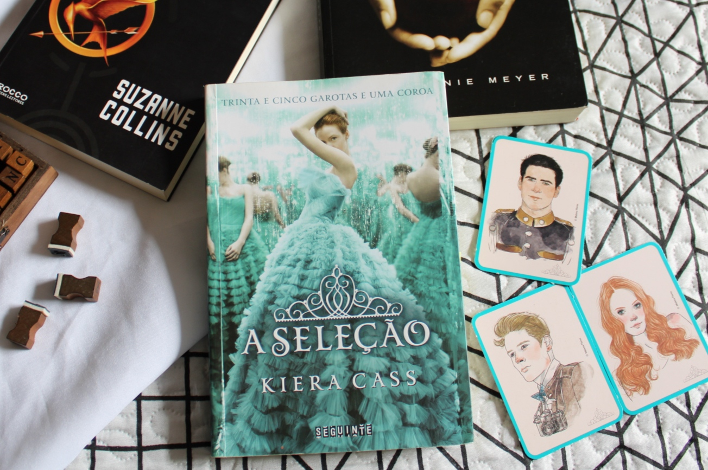

No início do sucesso de Crepúsculo, série de livros de Stephenie Meyer, Kiera Cass e uma amiga fizeram uma conta no Youtube para falar sobre a saga. Na época, o seu canal conseguiu um número considerável de inscritos. Em 2009, a escritora anunciou que publicaria um livro independente jovem-adulto chamado "A Sereia", após ser rejeitada por mais ou menos 80 agentes literários e pequenas editoras[3]. Com o anúncio online e venda de livros, ela conseguiu dinheiro suficiente para autopublicar o primeiro livro da sua carreira.
Um ano mais tarde, a HarperTeen (selo da editora HarperCollins) se interessou pela publicação de A Seleção. Segundo Cass, ela não pretendia escrever uma história distópica, mas o boom dos livros distópicos (como Jogos Vorazes que estava em alta na mesma época) fez com que o livro dela entrasse nesta mesma classificação.
"O meu é uma distopia diet. Meu editor acha que se todos esses livros que se passam no futuro não tivessem acontecido ao mesmo tempo, o meu não seria chamado de distopia. Eu queria que o meu fosse um conto de fadas, mas eu não conseguia encontrar um lugar no passado que funcionasse, então eu coloquei no futuro e criei um mundo que é meu" (Kiera Cass).[4]
Cass publicou o primeiro livro da saga A Seleção em 2012. Em 2013, A Elite como o segundo livro de sua saga e o terceiro A Escolha. O quarto livro, A Herdeira, foi lançado em 2015 e o quinto livro, A Coroa[9], lançado em 2016. Uma edição especial chamado Contos da Seleção, no qual os pensamento e pontos de vistas de outros personagens da saga são compartilhados, foram todos publicados pela HarperTeen.[10] Atualmente todos os contos se encontram no livro Felizes para Sempre[11] lançado em outubro de 2015.
Em outubro de 2019, a editora Seguinte anunciou em sua página do Twitter o novo livro da autora chamado de A Prometida que está previsto para chegar às livrarias no dia 5 de maio de 2020.
Obras principais: A seleção:Muitas garotas sonham em ser princesas, mas este não é o caso de America Singer. Ela topa se inscrever na Seleção só para agradar a mãe, certa de que não será sorteada para participar da competição em que o príncipe escolherá sua futura esposa. Mas é claro que depois disso sua vida nunca mais será a mesma... -->
A elite: A vida no palácio não era tão ruim quanto America imaginava. Ou melhor: com todos os mimos e privilégios que estava tendo, ela já mal se lembrava de como era pertencer à casta Cinco. Ser Um, em compensação, era fácil: suas criadas eram costureiras talentosíssimas e faziam vestidos maravilhosos; os banquetes e as festas que frequentava eram incrivelmente divertidos; e o conforto em que vivia agora seria impensável alguns meses atrás. Além de tudo, quando sentia saudade de casa, tinha Aspen por perto. Ele era compreensivo, companheiro e tinha decidido colocar sua vida em perigo por ela - afinal, o que aconteceria se alguém descobrisse que, além de guarda do palácio, era ex-namorado de uma das candidatas? Era com Aspen que America contava nas horas mais difíceis. Por outro lado, o príncipe Maxon era atraente, bondoso, carinhoso e - o mais importante - desejava America mais do que qualquer outra garota da Elite. Mas, além de estar com o coração secretamente dividido, também era difícil lidar com o fato de que aceitar Maxon significava ter que aceitar uma coroa. America não tinha certeza se gostaria de ser uma princesa. Apesar da vida glamorosa, havia tantas coisas com as quais ela não concordava e que permaneciam sem explicação: por que o palácio sofria tantos ataques rebeldes? O que era reivindicado? Por que os castigos aos infratores tinham de ser tão violentos? O que estava por trás daquele regime de castas tão cruel? O tempo está acabando e as dúvidas de America só aumentam.
A escolha: America era a candidata mais improvável da Seleção: se inscreveu por insistência da mãe e aceitou participar da competição só para se afastar de Aspen, um garoto que partira seu coração. Ao conhecer melhor o príncipe, porém, surgiu uma amizade que logo se transformou em algo mais... No entanto, toda vez que Maxon parecia estar certo de que escolheria America, algum obstáculo fazia os dois se afastarem. Um desses obstáculos era Aspen, que passou a ocupar o posto de guarda no palácio e estava decidido a reconquistar a namorada. Em encontros proibidos, ele a reconfortava em meio àquele mundo de luxos e rivalidades. Com essas idas e vindas, America perdeu um pouco de espaço no coração do príncipe, lugar que foi prontamente ocupado por outra concorrente. Para completar, o rei odiava America e a considerava a pior opção para o filho. Assim, tentava sabotar a relação dos dois, inventando mentiras e colocando a garota em prova a todo instante. Agora, para conseguir o que deseja, America precisa cortar os laços com Aspen, conquistar o povo de Illéa e conseguir novos aliados políticos. Mas tudo pode sair do controle quando ela começa a questionar o sistema de castas e a estratégia usada para lidar com os ataques rebeldes...

adaptação de cinema: Em 2012, os direitos de reprodução de A Seleção foram adquiridos pela CW Television Network e dois pilotos foram filmados, com os atores protagonistas Yael Grobglas (como America Singer) e Michael Malarkey (como Maxon Schreave)[13], mas o projeto não foi continuado.[14]
No dia 22 de abril de 2015, Cass anunciou que a Warner Bros garantiu os direitos de adaptação dos seus livros para a produção de um filme. O time de produtores divulgados inclui Denise Di Novi (Edward Mãos-de tesoura), Alison Greenspan (Se Eu Ficar e Monte Carlo), Pouya Shahbazian (Divergente) e Katie Lovejoy, esta como roteirista. No dia 17 de junho de 2016, Thea Sharrock (Como Eu Era Antes de Você) havia sido confirmada como diretora do filme.
Já em abril de 2020 a Netflix anunciou que A Seleção será dirigido pela cineastra Haifaa al-Mansour (Wadjda). A adaptação ainda está em fase de pré-produção e sem previsão de estreia. A produtora Denise Di Novi diz estar muito animada em trabalhar com a plataforma de streaming e fazer a adaptação acontecer. Segundo ela, a mensagem de empoderamento e autenticidade trazida pelos livros de Kiera Cass é mais do que importante nos dias de hoje.[